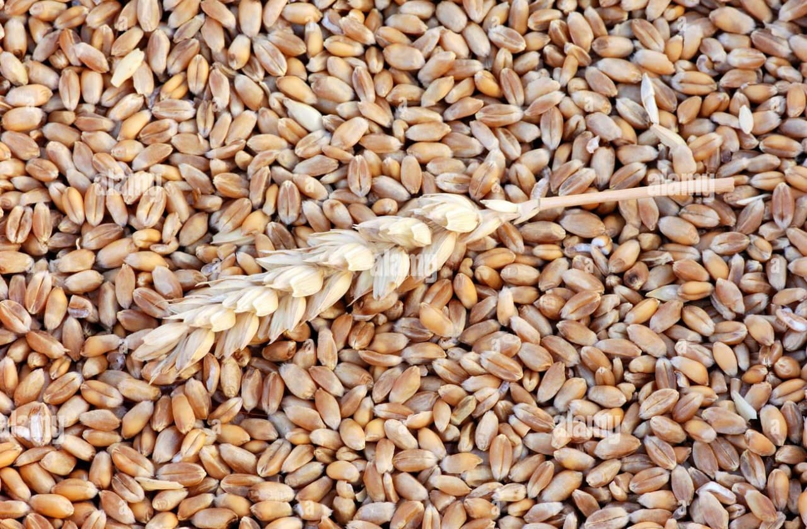
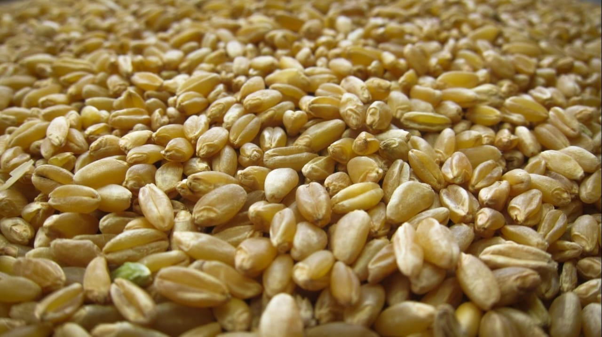
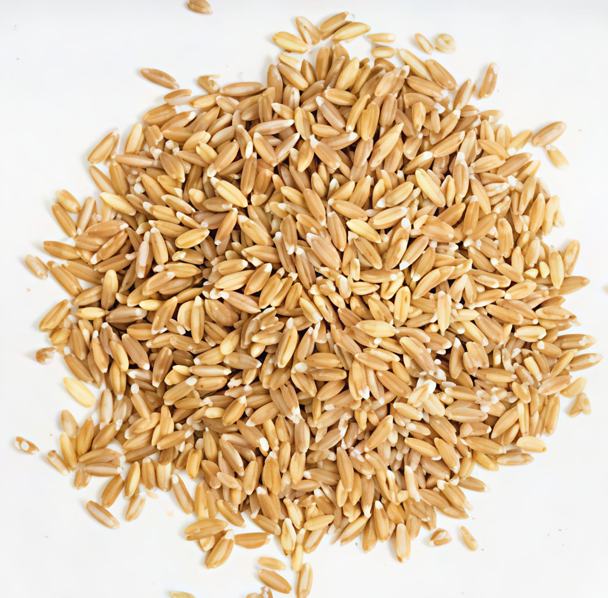

Type: Common bread wheat (soft/medium-hard)
Where it is grown: Indo-Gangetic plains – Punjab, Haryana, Uttar Pradesh, Bihar, Madhya Pradesh, Rajasthan
About: Most popular wheat in India (~90% area). Used for chapati, bread, bakery products. High yielding & adaptable to many soils and climates.

Type: Hard wheat, high in protein and gluten
Where it is grown: Madhya Pradesh, Maharashtra, Gujarat, parts of Karnataka
About: Used for pasta, macaroni, semolina (suji), noodles. Grains are amber-colored and hard. Rich in protein and suitable for industrial food processing.

Type: Ancient wheat variety (traditional)
Where it is grown: Karnataka, Maharashtra, Tamil Nadu, Andhra Pradesh
About: Nutritious, high in dietary fiber, easy to digest. Traditionally used in South India for making porridge, dosa, and health foods. Known as a “low-gluten” wheat, suitable for diabetic-friendly foods.